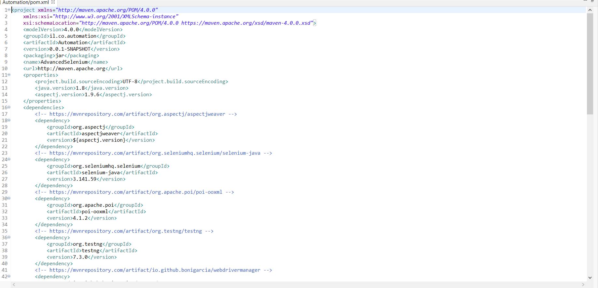
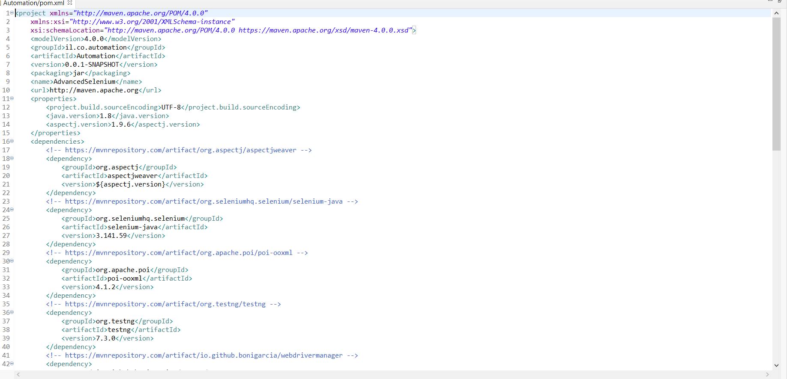

My Automation Project
Meytal Shitrit ~ QA and Automation Engineer
Meytal Shitrit ~ QA and Automation Engineer
The project was developed on involve.me website.
Involve.me is a user engagement & customer experience platform. Involve.me platform turn the audience into customers through personalized interactions on the web, such as fully cutomaizble quizzes, surveys,smart forms, personality test and more.
The aim of the project was to create an automation framework for involve.me website.
First, create test cases and scenarios for the platform features, then build solid automation using Java, which tests these use cases and finally create reports that display a concise representation of what has been tested.
 
